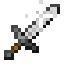
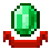
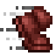
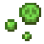
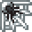

Armon
Occupation: Gravekeeper
Specialization: Spirits of the Dead
| 3 | |||
|---|---|---|---|
|  STR | 2 |  CHA | 1 |
| CON | 3 | PER | -1 |
|  DEX | -2 | SPR | 3 |
Abilities: Spirit Speak

Ashley
Occupation: Vault Overseer
Specialization: Dying
| 3 | |||
|---|---|---|---|
| STR | 2 | CHA | 0 |
| CON | 0 | PER | 2 |
| DEX | 0 | SPR | 2 |
Abilities: None
Carl
Occupation: Guard Captain
Specialization: Tactics
| 3 | |||
|---|---|---|---|
| STR | 4 | CHA | -1 |
| CON | 3 | PER | 1 |
| DEX | 2 | SPR | -1 |
Abilities: Brute Strength
Davelore
Occupation: Mystic
Specialization: Spiritual Rituals
| 3 | |||
|---|---|---|---|
| STR | 2 | CHA | 1 |
| CON | 1 | PER | -1 |
| DEX | -1 | SPR | 4 |
Abilities: Internal Power

Drake
Occupation: Archeologist, Merchant, Con-man, Architect, Part-time Fish
Specialization:
| 3 | |||
|---|---|---|---|
| STR | 1 | CHA | 2 |
| CON | 1 | PER | 3 |
| DEX | 1 | SPR | 0 |
Abilities: Eagle Eyes
Jaeger
Occupation: Hunter, Leatherworker
Specialization:
| 3 | |||
|---|---|---|---|
| STR | CHA | ||
| CON | PER | ||
| DEX | SPR |
Abilities: None

Jennifer
Occupation: Inventor
Specialization: Gunsmithing
| 3 | |||
|---|---|---|---|
| STR | 1 | CHA | 0 |
| CON | 0 | PER | 3 |
| DEX | 1 | SPR | 2 |
Abilities: None

Melphizard
Occupation: Blacksmith
Specialization: Sprits/Artifacts
| 3 | |||
|---|---|---|---|
| STR | 2 | CHA | 0 |
| CON | 2 | PER | 1 |
| DEX | 0 | SPR | 1 |
Abilities: None

Nydid
Occupation: Cook, Guard, Stewboy
Specialization: Stews/Mushrooms/Alcohol
| 3 | |||
|---|---|---|---|
| STR | 2 | CHA | -1 |
| CON | 3 | PER | 1 |
| DEX | 0 | SPR | 2 |
Abilities:  Iron Gut

Ponk
Occupation: Farmer, Brewer, Woodcutter, Builder
Specialization: Alchemy
| 3 | |||
|---|---|---|---|
| STR | CHA | ||
| CON | PER | ||
| DEX | SPR |
Abilities: None
Sockworthy
Occupation: Governor
Specialization: Management
| 3 | |||
|---|---|---|---|
| STR | -2 | CHA | 3 |
| CON | 1 | PER | 2 |
| DEX | 2 | SPR | -2 |
Abilities: None
Sola
Occupation: Druid, Guard
Specialization: Nature Spirits
| 3 | |||
|---|---|---|---|
| STR | CHA | ||
| CON | PER | ||
| DEX | SPR |
Abilities: None
Stephan
Occupation: Investigator, Guard
Specialization: Schizophrenia
| 3 | |||
|---|---|---|---|
| STR | CHA | ||
| CON | PER | ||
| DEX | SPR |
Abilities: None
Xena
Occupation: Fletcher, Smilker
Specialization: Smilking
| 3 | |||
|---|---|---|---|
| STR | CHA | ||
| CON | PER | ||
| DEX | SPR |
Abilities:  Webs